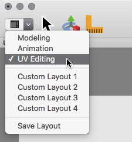
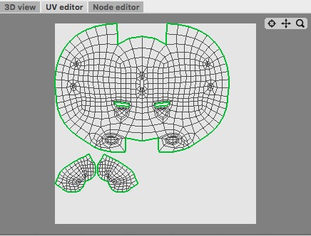
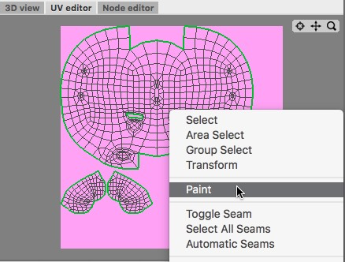

Texture Painting
In the last tutorial we learned how to assign UV coordinates to a complex surface. Now it's time to paint the texture.
| 1. Loading a mesh The first thing we have to do is to load a mesh. You can find the mesh of the Pig in the "Examples" folder which comes with Cheetah3D. Now change the window layout to "UV Editing". You should now have a 3D view and a UV Editor. After selecting the mesh of the pig in the object browser the UV coords of the pig will be displayed in the UV editor. Now we are where we left the last tutorial. |

 |
| 2. Create a texture Now select the pick material from the material browser and add a diffuse texture to it. You can do that by clicking on the small square on the right hand side of the "Diffuse" color property. A context menu will open from which you can add a "Image" texture. The properties of the newly added image texture node show up. Since there is no texture yet we create a new one with the "New texture" button. A save panel should open. In the save panel we set the texture name to "pig_tex" and choose a pink background color for the new texture. The usage of file formats like .tiff is recommended since they are loss less. So you can save the texture various times without loosing image quality. Now click on the "Save button". When you create a new texture the new texture will automatically become the current drawing target. |

|
| 3. Select the paint tool You should already see the new pink texture in the UV Editor. Now it's time to start painting. Open the context menu of the UV Editor and select the paint tool. The properties of the paint tool are now visible in the tools properties editor. Select the "fence" brush shape. |

|
| 4. Painting Now we can start painting. Just use the mouse to draw onto the texture. |
|
| 5. Finished When you are done with painting click the "Leave Edit" button in the texture properts. Now you will be asked if you want to save your changes. Save the changes and you are done. Later if you want to paint onto the texture again just click the "Edit" button of the texture properties before starting to paint. |
|
|
Now it is your turn. And I'm sure you can draw a nicer texture ;-) |
|